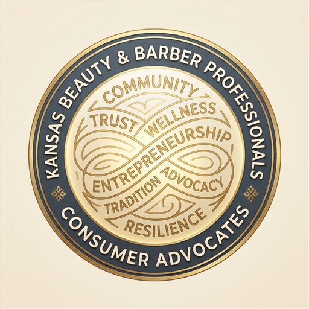
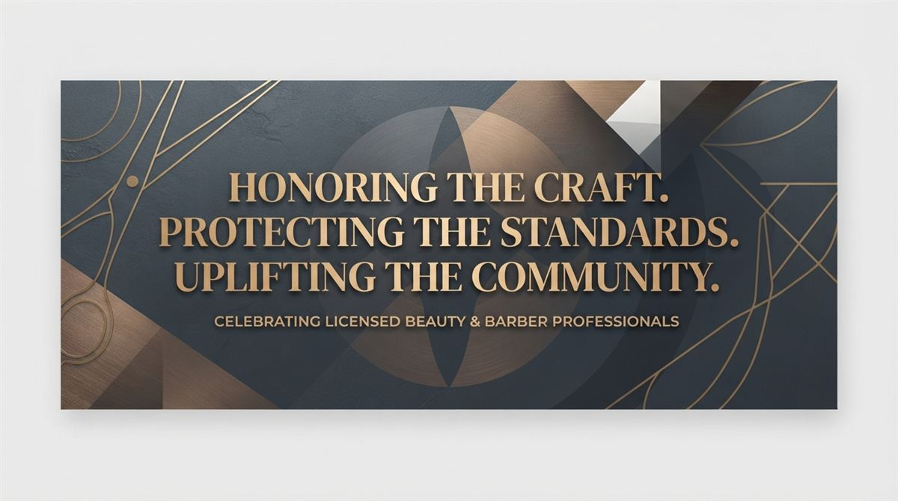

Right to know
Call for clear disclosure so consumers can make informed decisions about the services they choose.

Kansas Beauty & BarberKansas consumer advocacy
We’re calling for clear information for consumers—and a meaningful voice for the beauty and barber professionals who serve them.
Sign the right-to-know petitionBeauty and barber practitioners and consumers deserve transparency and a seat at the table.

The Kansas Beauty and Barber Professionals Consumer Advocates is a consumer-focused advocacy group. Our petition calls for full disclosure to consumers before unregulated beauty services are provided.
BBPCA is an independent, volunteer-run advocacy effort. We are not paid by any company, political party, or trade association. Our work is based on public records, and every article lists its sources so you can check the facts yourself.
We also call for the repeal of SB 30. Its 2026 veto override gives the Legislature the final say over licensing and rules that protect Kansas cosmetologists, barbers, and consumers. Read the Governor’s veto message.
Before booking a service, you can confirm a practitioner or establishment is licensed with the Kansas Board of Cosmetology license lookup.
Read and sign our petitionWe’re asking for consumer transparency and policies shaped with input from the people who do this work.
Call for clear disclosure so consumers can make informed decisions about the services they choose.
Beauty and barber professionals should have a voice in policies that affect their trades and communities.
Bring consumers’ questions about training, licensing, and oversight into the public conversation.
Advocate for clear disclosure when consumers receive services that are not regulated or licensed by the state.
Work toward repealing legislation that undermines professional licensure, consumer protection, and industry standards.
Advocate for fair and meaningful representation of licensed professionals on the Kansas Board of Cosmetology.
Highlight the value, professionalism, and economic impact of beauty and barbering careers.
Support policies and initiatives that promote professional growth, workforce development, and industry excellence.
Educate the public about the history, evolution, and contributions of the barbering and cosmetology professions.
Advocate for reasonable licensure standards and regulatory oversight that protect consumers, uphold professional qualifications, and maintain public trust.
Ensure policymakers and the public hear the perspectives of licensed professionals, educators, business owners, and consumers when considering deregulatory proposals.
Browse reviewed BBPCA articles. Use the index to sort and jump to any article, or open a headline to read.
A selection of reporting, industry updates, and official Kansas records shared by our group. Follow each link to its original publisher.
Official bill tracker · Kansas Legislature
Read the bill summary, versions, and legislative progress for this occupational licensing measure.
View the bill recordConsumer protection · Kansas Attorney General
Find consumer protection information, guidance, and resources from the Kansas Attorney General's Office.
Visit consumer protectionBill tracking · BillTrack50
Track the 2021–2022 Kansas bill exempting threading from cosmetology practice, signed into law in 2022.
View the bill summaryNews reporting · Kansas Reflector
Reporting on the 2024 debate over a proposal to exempt sugaring from cosmetology regulation, including arguments from supporters and opponents.
Read the articleIndustry update · Associated Hair Professionals
An industry update on Kansas joining the multistate compact and the steps required before compact licenses become available.
Read the updateHistory reporting · Smithsonian Magazine
Explore the historical role of barbershops as community gathering places and centers of civic engagement.
Read the articleHistory · National Museum of African American History and Culture
Explore the history of barbershops and beauty shops as important spaces for community connection and culture.
Read the storyKansas history · Kansas Historical Society
Read about John Brown and Kansas's historic association with anti-slavery activism.
Explore the historyHistory reporting · NPR
NPR reports on the role Black-owned beauty shops played in community organizing and political activism.
Read the articleCommittee transcript · Citizen Portal
Transcript of the Senate committee discussion introducing RS 3343, including the proposed board merger, license transition, supervised-practice pathway, and workforce scholarship program.
Read the transcriptKansas political reporting · Kansas Reflector
The article source list cites Kansas Reflector reporting on state politics, public officials, and campaigns. The list links to the publisher rather than a specific story.
Visit Kansas ReflectorKansas political reporting · The Kansas City Star
The article source list cites Kansas City Star reporting on elections, public officials, and political controversies. The list links to the publisher rather than a specific story.
Visit The Kansas City StarOfficial veto message · Kansas Secretary of State
Read the primary-source 2024 veto message on SB 434, which proposed exempting sugaring from the definition of cosmetology.
Read the veto messageOfficial voting records · Kansas Legislature
Search recorded votes from the 2025–2026 legislative biennium on the Kansas Legislature website.
Browse recorded votesLabor scorecard · Kansas AFL-CIO
Review the Kansas AFL-CIO's evaluation of Sen. Ty Masterson's voting record and labor-related voting percentages for the 2025–2026 session.
View the scorecardLabor statistics · U.S. Bureau of Labor Statistics
BLS explains how artificial intelligence may affect employment projections and discusses uncertainty around its effects on occupations and the labor market.
Read the fact sheetAI risk management · National Institute of Standards and Technology
Explore NIST's framework and resources for managing risks in the design, development, use, and evaluation of artificial intelligence systems.
Explore the frameworkAI governance · White House Office of Science and Technology Policy
Read the OSTP blueprint outlining principles and protections to guide the development and use of automated systems.
Read the blueprintLabor statistics · U.S. Bureau of Labor Statistics
BLS discusses potential AI impacts on occupations and how those impacts relate to employment projections.
Read the publicationOccupational outlook · U.S. Bureau of Labor Statistics
Explore job duties, work environment, education, pay, and employment outlook for barbers, hairstylists, and cosmetologists.
Read the occupational profileEducation statistics · National Center for Education Statistics
Explore NCES data and resources on career and technical education programs and participation.
Browse CTE statisticsPolicy research · National Conference of State Legislatures
Read the NCSL report assessing state occupational licensing policies and practices.
Read the reportDemographic data · U.S. Census Bureau
Explore Census Bureau data on communities, people, and households across the United States.
Explore the surveyOccupational outlook · U.S. Bureau of Labor Statistics
Browse BLS occupational profiles, including information on employment, pay, education, and job outlook.
Browse the handbookEmployment data · U.S. Bureau of Labor Statistics
Find BLS projections of employment by occupation and industry, along with related labor market data.
Explore employment projectionsLabor force data · U.S. Bureau of Labor Statistics
Review BLS labor force statistics from the monthly Current Population Survey, including employment and unemployment data.
Browse labor force statisticsLabor market research · Yale Budget Lab
Research examining evidence of artificial intelligence's effects on the labor market and whether broad employment impacts are visible in current data.
Read the researchPress release · Americans for Prosperity Kansas
Americans for Prosperity Kansas's press release addresses the legislature's veto overrides, including its support for the SB 30 override.
Read the press releaseAdvocacy organization · Americans for Prosperity Kansas
Visit the Kansas chapter's website for its policy positions, campaigns, and organization information.
Visit the Kansas chapterAdvocacy organization · Americans for Prosperity
Visit the national organization's website for its policy positions, campaigns, and background information.
Visit the organizationCampaign finance research · Center for Responsive Politics
Explore OpenSecrets research on political spending and advocacy activities associated with organizations connected to the Koch network.
Visit OpenSecretsOrganization profile · InfluenceWatch
Read InfluenceWatch's profile of Americans for Prosperity, including its organizational background and activities.
Read the profileOrganization profile · InfluenceWatch
Background information on the Kansas Policy Institute, its policy advocacy, and reported funding relationships.
Read the profileOrganization profile · InfluenceWatch
Background on the Kansas Justice Institute, its relationship with the Kansas Policy Institute, and its role as a litigation-focused organization.
Read the profileIndustry advocacy · Professional Beauty Association
Explore the Professional Beauty Association's advocacy work and ways to support the beauty industry.
Support your industryProfessional advocacy · Professional Beauty Association
Join the movement supporting licensed beauty professionals and professional standards.
Join the movementEvery factual claim in our campaign articles is tied to a public record, official site, or reputable report. Open an article to see its sources and what each one supports.
Kansas Beauty & Barber Professionals Consumer Advocates